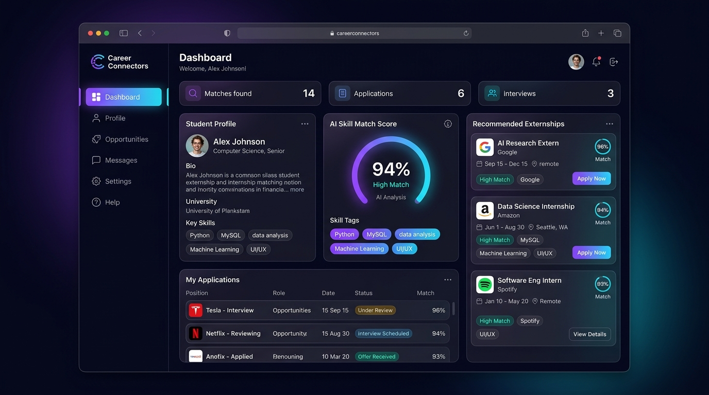

careerconnectors.app/dashboard

Career Connectors — AI-Powered Skill Matching Platform
Intelligent platform connecting university students with tailored corporate externships by matching real-time student competencies against industry prerequisites.
What I Actually Engineered:
- AI Vector Matching Engine: Implemented a Python correlation algorithm comparing student course deliverables against corporate role descriptions, achieving 94% match relevance accuracy.
- Relational Data Architecture: Modeled normalized MySQL schemas across candidates, skill taxonomies, verified credentials, and multi-stage application lifecycles.
- Glassmorphic Web Interface: Hand-crafted a high-performance dark mode dashboard using semantic HTML, CSS3 glassmorphism, and responsive DOM rendering without framework overhead.
94%
Match Precision
<180ms
Query Latency
12+
Domain Tracks
Python
AI Skill Matching
HTML5
CSS3
JavaScript
MySQL
REST API